On Windows, you can mount a network drive in the file explorer from This PC.
In the menu bar, select Computer and Map network drive. Choose an
available drive letter, set the field Folder to \\$(address) where
$(address) is replaced with the network share address, and tick
Connect using different credentials.
\\fcbgnasc.campusbiotech.ch\fcbgdata
A pop-up will request your credentials. Enter your username and password.
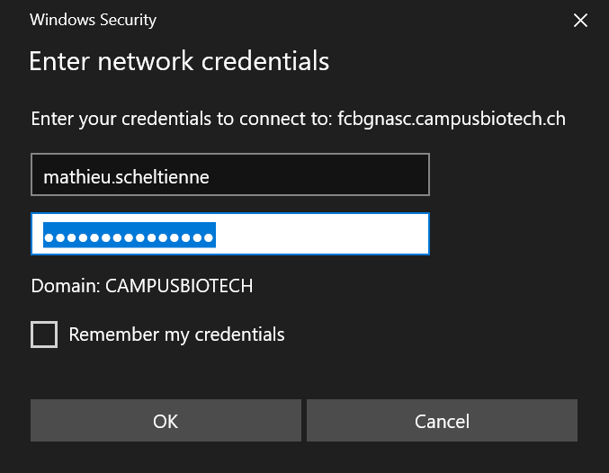
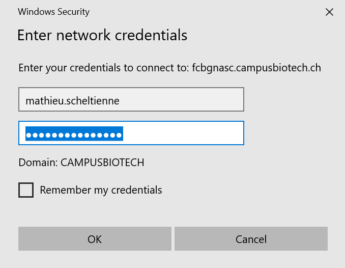
Important
On the stimulation PC do not save the
password. Please deselect Remember my credentials.
The network share is now mounted and appears in the left pane as a network
drive.
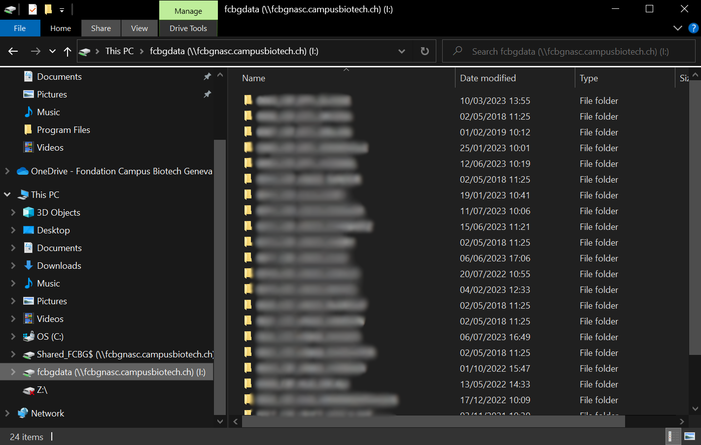
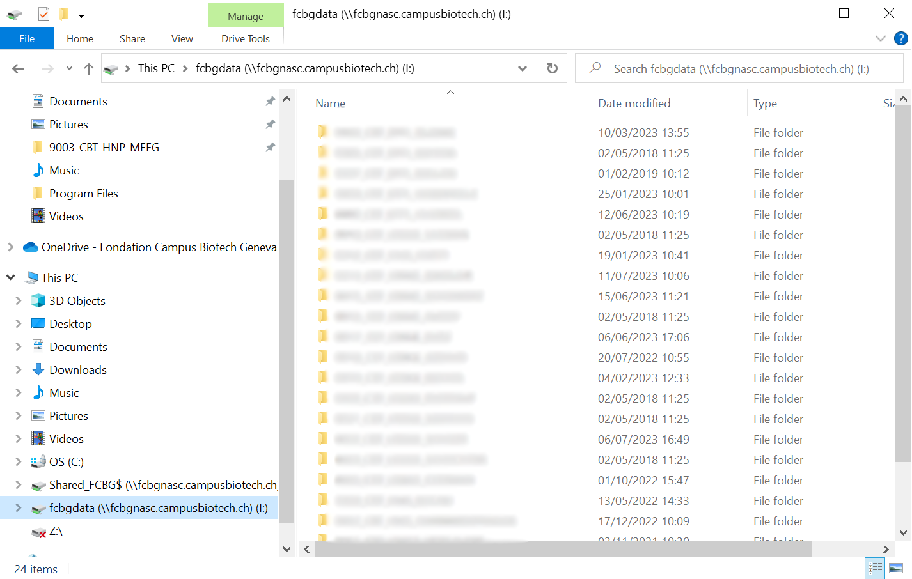
Important
On the stimulation PC please disconnect the
network drive when you are leaving.
On macOS, Finder can connect to network share. After opening it, hit
Cmd + K, or select Go and Connect to Server... to open the
corresponding pop-up. In the address field, enter smb://$(address) where
$(address) is replaced with the network share address. For instance:
smb://fcbgnasc.epfl.ch/fcbgdata
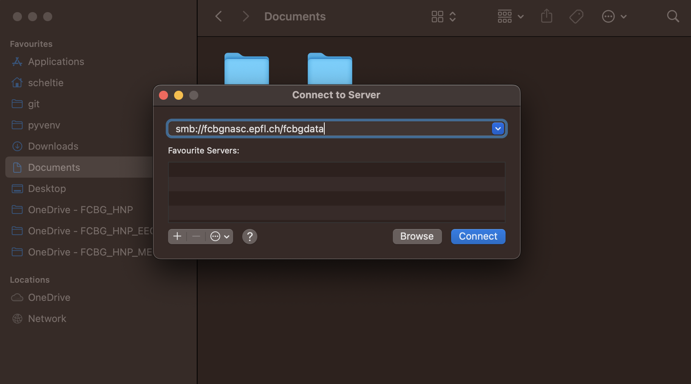
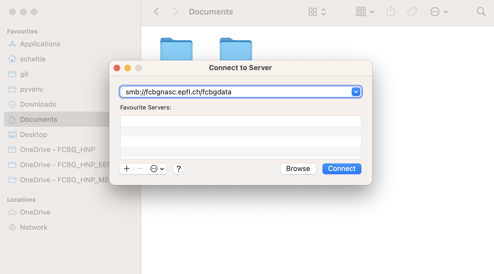
A pop-up will request your credentials. Select Registered User, enter your
username and password.
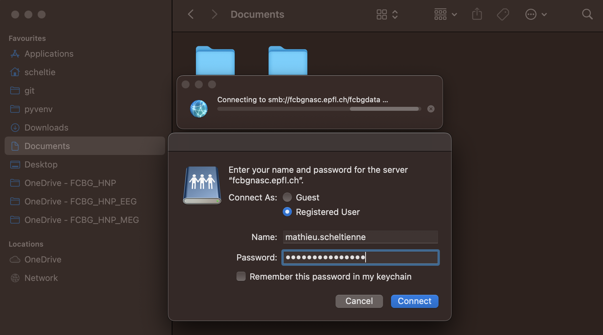
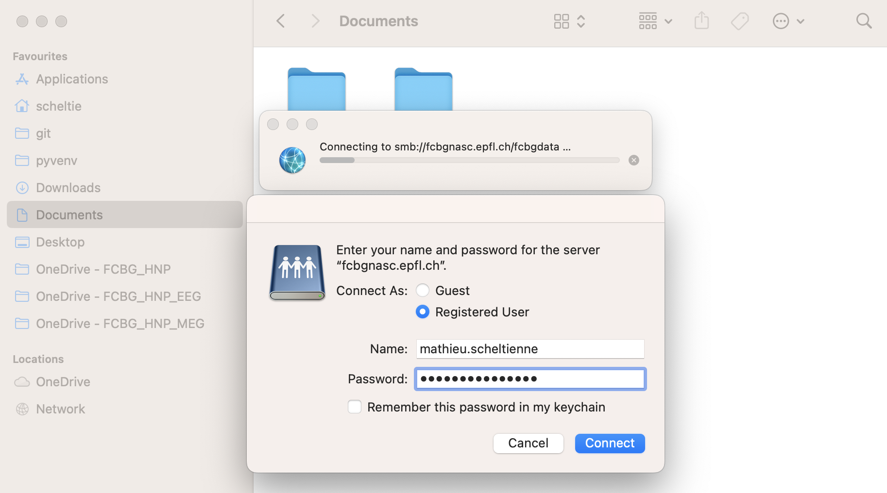
The network share is now mounted and appears in the left pane as an external
drive.
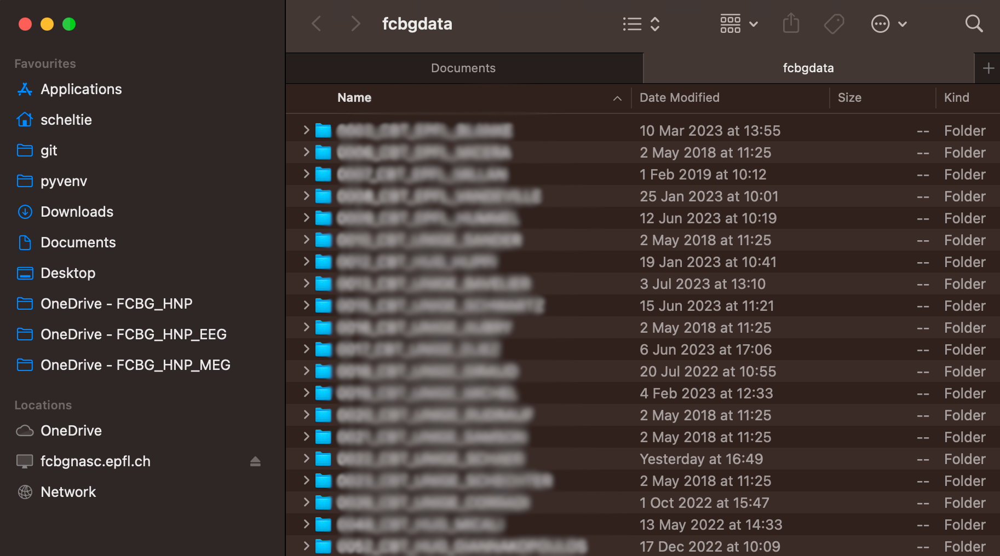
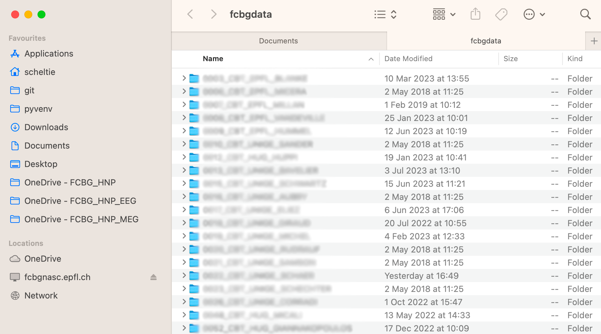
Mounting the network share might differ depending on your Linux distribution.
For an Ubuntu-based distribution, the network share can be mounted from the
nautilus file explorer. It requires smbclient to be installed.
$ sudo apt install smbclient
In the left pane of the file explorer, select Other locations. At the
bottom, in the field Connect to Server, enter smb://$(address) where
$(address) is replaced with the network share address. For instance:
smb://fcbgnasc.campusbiotech.ch/fcbgdata
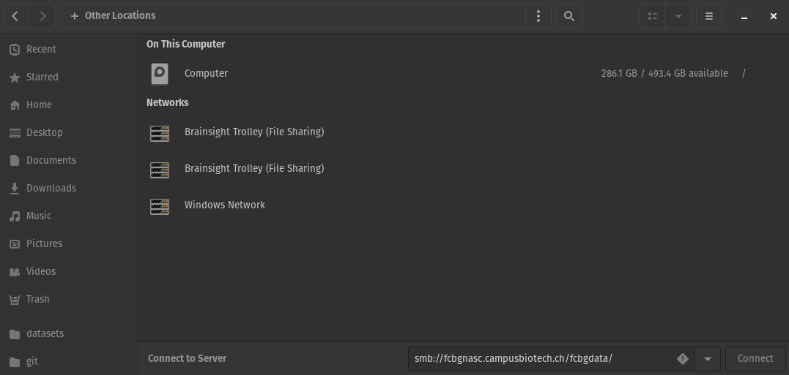
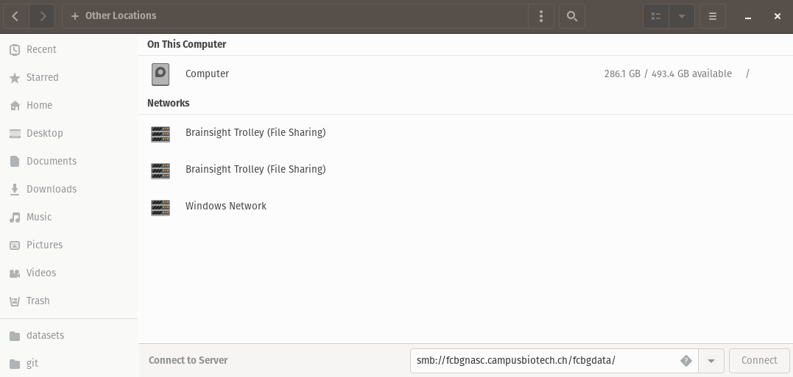
A pop-up will request your credentials. Select Registered User, enter your
username, domain (campusbiotech.ch, epfl.ch or unige.ch) and
password.
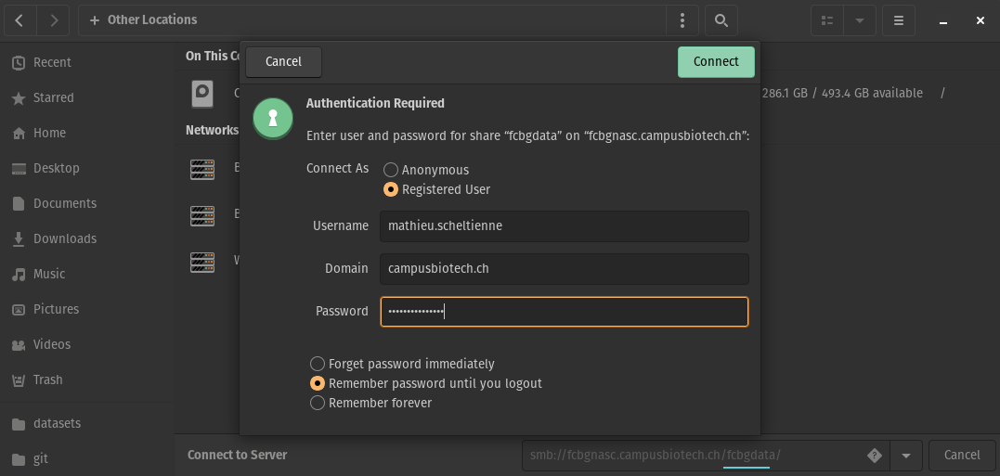
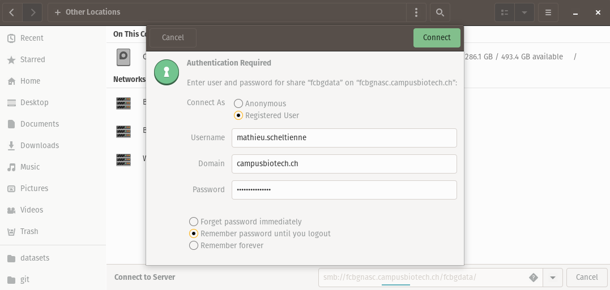
Important
On the stimulation PC or the
data analysis PC, do not
save the password. Please select Forget password immediately or
Remember password until you logout.
The network share is now mounted and appears in the left pane as an external
drive.
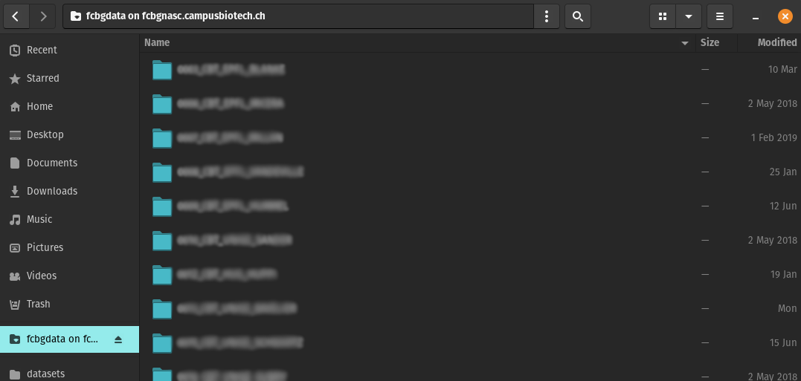
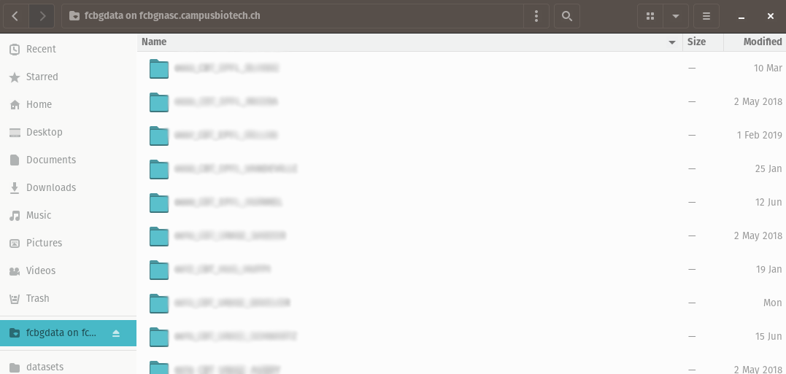
Tip
If you want to mount the network share automatically, e.g. on boot, you can
edit /etc/fstab and use cifs.
$ sudo apt install cifs-utils
$ sudo mkdir /mnt/Isilon # location in which the share is mounted
$ sudo nano /etc/fstab
In the fstab, add a line:
//fcbgnasc.$(network).ch/fcbgdata/$(share) /mnt/Isilon cifs credentials=/root/.smbcredentials,uid=$(user),gid=$(user),file_mode=0770,dir_mode=0770 0 0
Where $(network) is replaced by the network you are connected to,
$(share) is replaced by the share name, $(user) is replaced by your
username. The credentials have to be defined in /root/.smbcredentials:
username=...
password=...
domain=... # campusbiotech.ch, epfl.ch or unige.ch
If you are using systemd, you can add the flags:
x-systemd.automount to automatically mount the share if it was not
already available when you navigate to /mnt/Isilon.
x-systemd.after=network-online.target to mount only after the target
network is connected.
{kind=link}
{kind=link}
{kind=link}